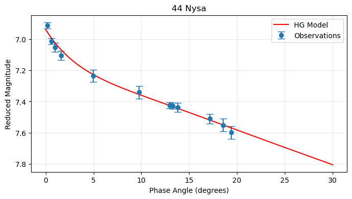
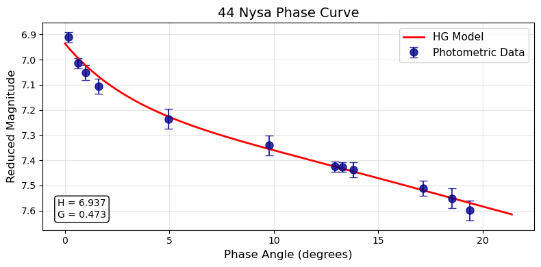
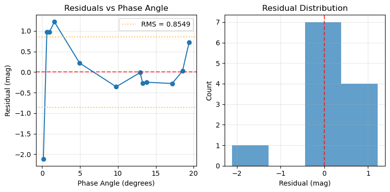
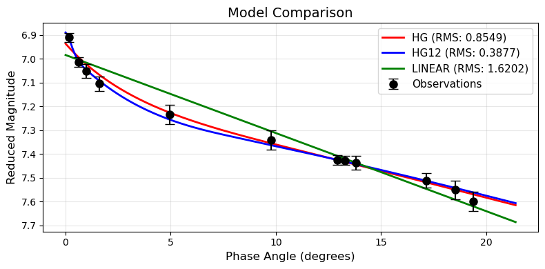
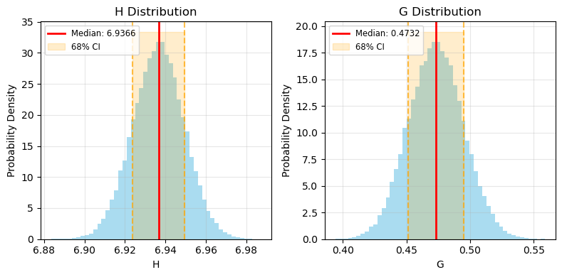
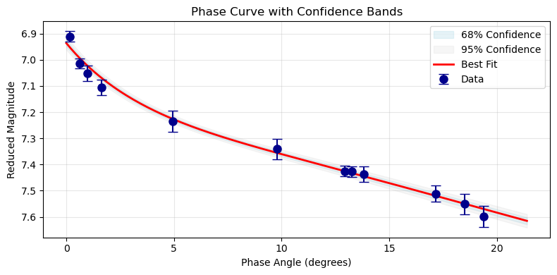

Plotting Results¶
Overview¶
pySPAC integrates with matplotlib for visualization. Use generateModel() to create smooth model curves for plotting.
Basic Phase Curve Plot¶
Simple Plot¶
import numpy as np
import matplotlib.pyplot as plt
# After fitting a model
pc.fitModel(model="HG", method="trust-constr")
# Plot observational data
plt.errorbar(pc.angle, pc.magnitude, yerr=pc.magnitude_unc,
fmt='o', capsize=5, label='Observations')
# Generate and plot model curve
model_angles = np.linspace(0, 30, 200)
model_mags = pc.generateModel(model="HG", degrees=model_angles)
plt.plot(model_angles, model_mags, 'r-', label='HG Model')
# Format plot
plt.gca().invert_yaxis() # Astronomy convention: dimmer is up
plt.xlabel('Phase Angle (degrees)')
plt.ylabel('Reduced Magnitude')
plt.title('44 Nysa')
plt.legend()
plt.grid(True, alpha=0.3)
plt.show()

Enhanced Plot¶
def plot_phase_curve(pc, model_name=None, title="Phase Curve"):
"""Create enhanced phase curve plot."""
if model_name is None:
model_name = pc.fitting_model
fig, ax = plt.subplots(figsize=(8, 4))
# Plot data with error bars
ax.errorbar(pc.angle, pc.magnitude, yerr=pc.magnitude_unc,
fmt='o', capsize=4, markersize=8, color='darkblue',
label='Photometric Data', alpha=0.8)
# Generate smooth model curve
angle_range = np.linspace(max(0, np.min(pc.angle)-2),
np.max(pc.angle)+2, 300)
model_curve = pc.generateModel(model=model_name, degrees=angle_range)
ax.plot(angle_range, model_curve, 'r-', linewidth=2,
label=f'{model_name} Model')
# Add parameter text
if pc.params:
param_text = []
for param, value in pc.params.items():
if not param.lower().startswith('constraint'):
param_text.append(f'{param} = {value:.3f}')
textstr = '\n'.join(param_text)
props = dict(boxstyle='round', facecolor='white', alpha=1)
ax.text(0.03, 0.15, textstr, transform=ax.transAxes,
verticalalignment='top', bbox=props)
# Formatting
ax.invert_yaxis()
ax.set_xlabel('Phase Angle (degrees)', fontsize=12)
ax.set_ylabel('Reduced Magnitude', fontsize=12)
ax.set_title(title, fontsize=14)
ax.legend(fontsize=11)
ax.grid(True, alpha=0.3)
plt.tight_layout()
plt.show()
# Usage
plot_phase_curve(pc, title="44 Nysa Phase Curve")

Residual Plots¶
Basic Residuals¶
def plot_residuals(pc):
"""Plot fit residuals."""
if pc.fit_residual is None:
print("No residuals available - fit a model first")
return
residuals = np.array(pc.fit_residual)
fig, (ax1, ax2) = plt.subplots(1, 2, figsize=(8, 4))
# Residuals vs phase angle
ax1.plot(pc.angle, residuals, 'o-', markersize=6)
ax1.axhline(y=0, color='red', linestyle='--', alpha=0.7)
# Add RMS line
rms = np.sqrt(np.mean(residuals**2))
ax1.axhline(y=rms, color='orange', linestyle=':', alpha=0.7, label=f'RMS = {rms:.4f}')
ax1.axhline(y=-rms, color='orange', linestyle=':', alpha=0.7)
ax1.set_xlabel('Phase Angle (degrees)')
ax1.set_ylabel('Residual (mag)')
ax1.set_title('Residuals vs Phase Angle')
ax1.legend()
ax1.grid(True, alpha=0.3)
# Residual histogram
ax2.hist(residuals, bins=max(3, len(residuals)//3), alpha=0.7)
ax2.axvline(x=0, color='red', linestyle='--', alpha=0.7)
ax2.set_xlabel('Residual (mag)')
ax2.set_ylabel('Count')
ax2.set_title('Residual Distribution')
ax2.grid(True, alpha=0.3)
plt.tight_layout()
plt.show()
# Usage
plot_residuals(pc)

Model Comparisons¶
Multiple Models¶
def plot_model_comparison(pc, models=["HG", "HG12", "LINEAR"]):
"""Compare multiple models on same data."""
fig, ax = plt.subplots(figsize=(8, 4))
# Plot data
ax.errorbar(pc.angle, pc.magnitude, yerr=pc.magnitude_unc,
fmt='o', capsize=5, markersize=8, color='black',
label='Observations', zorder=10)
# Generate angle range for smooth curves
angle_range = np.linspace(max(0, np.min(pc.angle)-2),
np.max(pc.angle)+2, 200)
colors = ['red', 'blue', 'green', 'orange', 'purple']
# Fit and plot each model
for i, model in enumerate(models):
try:
# Fit model
method = "trust-constr" if model != "LINEAR" else "leastsq"
pc.fitModel(model=model, method=method)
# Generate curve
model_curve = pc.generateModel(model=model, degrees=angle_range)
# Calculate RMS for legend
rms = np.sqrt(np.mean(np.array(pc.fit_residual)**2))
# Plot
color = colors[i % len(colors)]
ax.plot(angle_range, model_curve, '-', linewidth=2, color=color,
label=f'{model} (RMS: {rms:.4f})')
except Exception as e:
print(f"Failed to fit {model}: {e}")
ax.invert_yaxis()
ax.set_xlabel('Phase Angle (degrees)', fontsize=12)
ax.set_ylabel('Reduced Magnitude', fontsize=12)
ax.set_title('Model Comparison', fontsize=14)
ax.legend(fontsize=11)
ax.grid(True, alpha=0.3)
plt.tight_layout()
plt.show()
# Usage
plot_model_comparison(pc, models=["HG", "HG12", "LINEAR"])

Uncertainty Visualization¶
Parameter Distributions¶
def plot_parameter_distributions(pc):
"""Plot Monte Carlo parameter distributions."""
if pc.montecarlo_uncertainty is None:
print("Run Monte Carlo analysis first")
return
mc_data = pc.montecarlo_uncertainty
n_params = len(mc_data)
fig, axes = plt.subplots(1, n_params, figsize=(8,4))
if n_params == 1:
axes = [axes]
for i, (param, samples) in enumerate(mc_data.items()):
ax = axes[i]
# Histogram
ax.hist(samples, bins=50, alpha=0.7, density=True, color='skyblue')
# Add percentile lines
median = np.percentile(samples, 50)
lower = np.percentile(samples, 15.87)
upper = np.percentile(samples, 84.13)
ax.axvline(median, color='red', linewidth=2, label=f'Median: {median:.4f}')
ax.axvline(lower, color='orange', linestyle='--', alpha=0.7)
ax.axvline(upper, color='orange', linestyle='--', alpha=0.7)
# Shaded region
ax.fill_betweenx([0, ax.get_ylim()[1]], lower, upper,
alpha=0.2, color='orange', label='68% CI')
ax.set_xlabel(param)
ax.set_ylabel('Probability Density')
ax.set_title(f'{param} Distribution')
ax.legend(fontsize="small")
ax.grid(True, alpha=0.3)
plt.tight_layout()
plt.show()
# Usage after Monte Carlo
pc.monteCarloUncertainty(n_simulations=50000, model="HG", method="trust-constr")
plot_parameter_distributions(pc)

Confidence Bands¶
def plot_confidence_bands(pc, model_name=None, n_curves=500):
"""Plot phase curve with confidence bands."""
if pc.montecarlo_uncertainty is None:
print("Run Monte Carlo analysis first")
return
if model_name is None:
model_name = pc.fitting_model
# Generate angle range
angle_range = np.linspace(max(0, np.min(pc.angle)-2),
np.max(pc.angle)+2, 200)
# Generate curves from Monte Carlo samples
mc_samples = pc.montecarlo_uncertainty
param_names = list(mc_samples.keys())
n_samples = len(mc_samples[param_names[0]])
curves = []
for i in range(min(n_curves, n_samples)):
# Create parameter set for this sample
temp_params = {param: samples[i] for param, samples in mc_samples.items()}
# Generate curve
try:
temp_pc = PhaseCurve(angle=angle_range, params=temp_params)
curve = temp_pc.generateModel(model=model_name, degrees=angle_range)
curves.append(curve)
except:
continue
if not curves:
print("Could not generate confidence bands")
return
curves = np.array(curves)
# Calculate percentiles
fig, ax = plt.subplots(figsize=(10, 6))
# 68% confidence band
lower_68 = np.percentile(curves, 15.87, axis=0)
upper_68 = np.percentile(curves, 84.13, axis=0)
ax.fill_between(angle_range, lower_68, upper_68,
alpha=0.3, color='lightblue', label='68% Confidence')
# 95% confidence band
lower_95 = np.percentile(curves, 2.5, axis=0)
upper_95 = np.percentile(curves, 97.5, axis=0)
ax.fill_between(angle_range, lower_95, upper_95,
alpha=0.2, color='lightgray', label='95% Confidence')
# Best fit curve
best_fit = pc.generateModel(model=model_name, degrees=angle_range)
ax.plot(angle_range, best_fit, 'r-', linewidth=2, label='Best Fit')
# Data points
ax.errorbar(pc.angle, pc.magnitude, yerr=pc.magnitude_unc,
fmt='o', capsize=5, markersize=8, color='darkblue',
label='Data', zorder=10)
ax.invert_yaxis()
ax.set_xlabel('Phase Angle (degrees)')
ax.set_ylabel('Reduced Magnitude')
ax.set_title('Phase Curve with Confidence Bands')
ax.legend()
ax.grid(True, alpha=0.3)
plt.tight_layout()
plt.show()
# Usage
plot_confidence_bands(pc)

Next Steps¶
- Generate Models - Model generation from known parameters